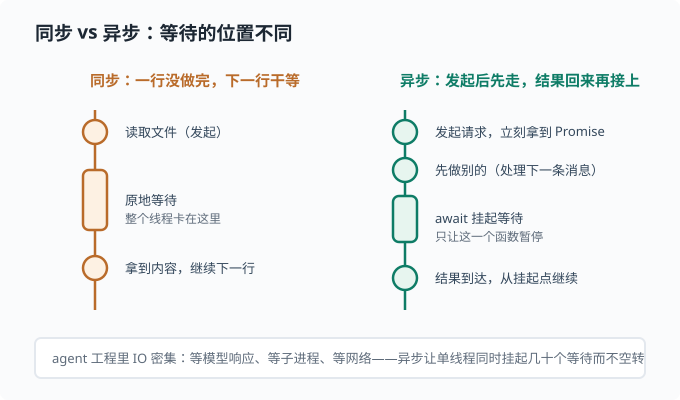
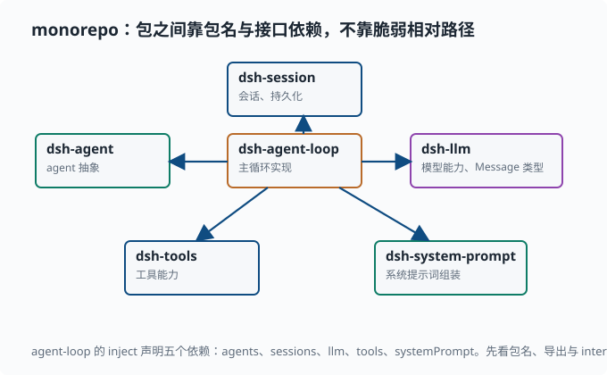

读 TypeScript 仓库：TS/Node 心智模型
目标：建立读懂
deepseek-harness（TypeScript / Node + pnpm monorepo）的最低门槛。读完这一页，你能看懂一行 TypeScript 的类型标注、理解模块与导入、认识 monorepo 布局和"一切皆插件"的组织方式，并知道从哪里开始读一个中型仓库而不迷路。
为什么先学读 TypeScript
deepseek-harness 是 TypeScript 写的。如果你只会 Python，第一眼会有点慌，但两者背后是同一套编程思想，只是语法和类型系统不同。这一页不教你写完整 TypeScript，而是教你怎么读懂它——这正是你后续拆解这个仓库时需要的能力。
一个关键心态：
TypeScript 是"带类型的 JavaScript"。它的核心价值是类型系统：在很多错误真正发生之前，编译器就能替你抓出来。读懂 TS，一半是读懂它记录的类型意图。
从 Python 到 TypeScript：快速映射
| Python | TypeScript / JavaScript | 说明 |
|---|---|---|
def f(x): |
function f(x) {} |
函数定义 |
x = 1 |
let x = 1 / const x = 1 |
let 可变，const 不可重新赋值 |
if x: |
if (x) { } |
括号加花括号 |
for x in xs: |
for (const x of xs) { } |
遍历 |
import m |
import ... from 'm' |
导入 |
dict |
object / Map |
键值容器 |
list |
Array |
数组 |
def f() 同步阻塞 |
async f(): Promise<T> |
异步返回"将来才有"的值 |
TypeScript 的关键差别：
const/let区分"只读绑定"与"可重新赋值绑定"（类似 Python 的元组 vs 列表直觉）。- 类型标注写在冒号后：
let n: number = 1。 - 花括号和分号，缩进不参与语法（缩进只是风格）。
- JavaScript 有异步的独特玩法（
async/await、Promise），这在 agent 工程里无处不在，因为 IO 操作大量是异步的。
异步：读 agent 仓库绕不开的一关
上面最后一条值得单独展开，因为它没有 Python 对应物（asyncio 有但用得少），却是读懂 agent 仓库的必经关卡：agent 每一步都在等——等模型吐下一个 token、等子进程跑完、等网络返回。如果每等一次就把整个线程冻住，一个服务同时只能伺候一个请求。
JavaScript 的解法是异步：发起 IO 后不原地干等，函数先返回，结果到达时再"接回来"继续。先认识两个符号：
// fetch 发起网络请求，立刻返回一个 Promise——"将来才会有结果"的凭据
const pending: Promise<Response> = fetch(url)
// await 只能写在 async 函数里：在这里挂起，等结果到达后继续往下走
async function getText(url: string): Promise<string> {
const response = await fetch(url) // 挂起，直到响应到达
return await response.text() // 再挂起一次，等正文解析完
}
读法要点：await 暂停的是这个函数，不是整个程序。挂起期间，事件循环（event loop）去跑别的任务；结果一到，函数从挂起点原地继续。同步与异步的差别画出来是这样：

深挖：为什么"挂起函数而不是线程"很划算？因为一个 agent 服务可能同时挂着几十个对话，每个都在等各自的模型响应。异步让单线程在几十个等待之间切换——谁的结果到了就先处理谁——没有线程切换开销，也没有空转烧 CPU。你后面在 deepseek-harness 里看到的几乎所有服务方法都是
async，原因就在这里。
Python 读者的对照：async def / await 在 Python 里也存在（asyncio），语义几乎一样；差别在于 Python 的生态默认同步、异步要显式选择，而 Node 生态从底层 API 起就是异步的。
类型标注：读懂意图
一段带类型的函数：
function mean(xs: number[]): number {
return xs.reduce((a, b) => a + b, 0) / xs.length
}
xs: number[] 说"参数是数字数组"，: number 说"返回值是数字"。reduce 是"把数组逐项累积成一个值"的函数（这里从 0 出发逐项相加，角色类似 Python 的 sum），(a, b) => a + b 是箭头函数——JS 的匿名函数写法，对应 Python 的 lambda a, b: a + b。这就是读代码时的"意图地图"：不用追进函数体，你已经知道它输入什么、输出什么。
常见的类型关键词：
let name: string = "a"
let count: number = 1
let ok: boolean = true
let tags: string[] = ["x", "y"]
let maybe: number | undefined = undefined // 联合类型
number | undefined（可空）在 TS 里写得很显式，提醒你"这个值可能不存在"——读代码时看到 | undefined 就要留意空值分支的处理。这比 Python 隐式地到处 None 更明确。
interface：描述对象的形状
TS 用 interface 描述一个对象"长得什么样"：
interface AgentOptions {
model: string
maxTokens?: number // ? 表示可选
}
读源码时看到 interface，就是在声明"这类对象有哪些字段、什么类型"。deepseek-harness 里大量用 interface 描述 agent、session、配置的形状。
泛型与实际例子
泛型（generics）是"类型的占位符"：写代码时先不定死类型，用 T 这样的字母代替，用的时候再填进来——类似 Python 里 def f(x: T) -> T 的效果。deepseek-harness 里你能看到这样的用法：
const exactIdentities = new Map<SessionId, string>()
Map<SessionId, string> 读作"一个映射，键填的是 SessionId 类型，值填的是 string"——Map<K, V> 里的 K、V 就是两个类型占位符，尖括号里填什么类型，它就装什么。这就是 TS 里读代码的核心习惯：先看类型，再猜行为。
模块与包：pnpm monorepo
一个仓库包含多个独立"包"（package），用 pnpm 统一管理，叫 monorepo。deepseek-harness 的 packages/core/ 下就是一组包，例如：
packages/core/
agent/ agent 抽象与分发
agent-loop/ agent 主循环实现
agent-default-model/
agent-tool-presentation/
scope/ 作用域
session/ 会话
system-prompt/ 系统提示词组装
tools/ 工具
每个包通常有：
src/：源码（TypeScript）。tests/：单元测试（*.spec.ts），用 vitest 跑——TS 世界里最流行的测试框架之一，角色相当于 Python 的 pytest。package.json：包的元数据、依赖、脚本。
跨包引用用包名，而不是相对路径。比如在 agent-loop/src 里：
import type { Agent } from '@deepseek-ai/dsh-agent'
@deepseek-ai/dsh-agent 是 agent 包的包名。这种"包名导入"让仓库各模块通过清晰、稳定的接口互相连接——这就是为什么它能拆成很多小块各自维护。
monorepo 里小包之间的依赖是一张有向图：agent-loop 依赖 agent、session、llm 和 tools，每个包通过 @deepseek-ai/dsh-xxx 这样的稳定包名互相引用：

读这张图时抓住一点：依赖是"接口级"的，不是"文件级"的。一个包对外暴露什么，由它的 index.ts 导出决定；别的包只认这些导出，不关心内部实现。所以你能单独替换某个包、单独测试它，而不用牵一发动全身——这正是 deepseek-harness 能拆成这么多个小包还能在一起工作的原因。
"一切皆插件"的组织方式
deepseek-harness 的核心哲学是一切皆插件：每个能力（agent 循环、工具、shell、会话……）都作为一个插件提供，通过一个叫 Cordis 的框架挂载到一起（Cordis 是一个插件式依赖注入框架——负责"声明需要什么、由谁提供什么、什么时候启动和清理"的底层机制）。读代码时你会反复看到 ctx（context，上下文——每个插件拿到的"接线板"，需要什么服务都从它身上取）：
export class AgentLoop extends Service implements AgentFactory {
static inject = ['agents', 'sessions', 'llm', 'tools', 'systemPrompt']
...
}
inject 声明了这个服务"依赖哪些别的东西"（Service 和 AgentFactory 是框架提供的基类与接口：前者让这个类成为可被框架管理的服务，后者承诺"我能生产 agent"）。这种"声明依赖、由框架注入"的模式，读起来很抽象，但好处是模块之间靠接口连接，可以单独替换。
作为初学者，你不必一开始就吃透这些框架语义。关键是建立两个习惯：
- 先看包名和导出：
index.ts里export class .../export function ...告诉你这个包对外提供什么。 - 先看类型和接口：构造函数参数、
interface字段，比追实现更快理解"这个模块在做什么"。
读一个中型仓库的方法
遇到陌生仓库，别从 src 最深处开始。按这个顺序：
- 读顶层 README：项目是做什么的、怎么跑。
- 读目录结构：
packages/、docs/、scripts/各自职责。 - 读架构文档：deepseek-harness 的
docs/architecture.md是官方推荐的第一站。 - 从入口往内：
index.ts/main入口怎么组织，再顺着导入链往下。 - 用测试当说明书：
*.spec.ts用"输入 → 输出"告诉你某模块行为，比读实现更快。 - 用类型当地图：
interface和函数签名告诉你数据长什么样、函数做什么。
正确的阅读单位是**"一个行为"**：先问"有哪个测试覆盖了它？这个接口的契约是什么？"，再读实现。
把"从哪切入陌生仓库"的先后顺序画成一条路径，避免一头扎进源码最深处：
flowchart TD
A["顶层 README<br/>项目做什么、怎么跑"] --> B["目录结构<br/>各目录职责"]
B --> C["架构文档<br/>先看官方总览"]
C --> D["入口 index.ts<br/>顺着导入链往下"]
D --> E["测试当说明书<br/>.spec.ts 给行为"]
E --> F["类型当地图<br/>interface / 签名"]
动手：读一个跨包引用
假设你打开 packages/core/agent-loop/src/agent.ts，开头是这样：
import type { Agent, AgentStatus } from '@deepseek-ai/dsh-agent'
import { Inbox, agentEvents } from '@deepseek-ai/dsh-agent'
import type { Message } from '@deepseek-ai/dsh-llm'
你要抓住的信息：
Agent、AgentStatus来自dsh-agent包，是类型（import type表示只用于类型标注）。dsh-llm提供Message类型——agent 循环依赖 LLM 的消息结构。- 顺着
Message找到它的定义文件，你就知道"一次发给模型的消息长什么样"。
这串起来就是 agent 循环的第一条主线：agent 从会话/工具拿输入，拼成 Message，发给 LLM，再执行返回的工具调用。
思考题
- TypeScript 里
number | undefined想表达什么？读代码时看到它要留意什么？ import type { Agent } from '@deepseek-ai/dsh-agent'中@deepseek-ai/dsh-agent是什么？await暂停的是什么？为什么"同时挂起几十个模型请求"不需要几十个线程？interface AgentOptions { maxTokens?: number }里的?表示什么？
参考答案
- 表达"这个值要么是 number，要么是 undefined（不存在）"。读代码时要留意空值分支：使用前必须判空，否则运行时会出错。
- 它是
agent这个包的包名。用包名导入让仓库各模块通过稳定接口互相连接，而不是依赖脆弱的相对路径。 await暂停当前这个 async 函数，不是整个程序也不是线程。挂起期间事件循环去推进其他任务；单线程就能同时维持几十个挂起的等待，谁的结果先到就先恢复谁——没有线程切换开销，这是 Node 用少量线程扛住大量 IO 的核心机制。?表示该字段可选，调用方可以省略。缺少?时该字段是必须提供的。
下一步
- 想用 Python 快速做研究 → 02-07 用 Python 做研究。
- 想在后续真正拆解 deepseek-harness → 10 实战 Lab。
- 想回到数学直觉 → 01-01 线性代数。